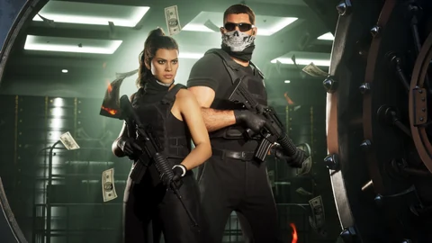

Image officielle
Jason And Lucia 02
Jason et Lucia équipés de carabines de silhouette AR pendant une scène de braquage.

L’essentiel
Jason And Lucia 02 est une image officielle de GTA VI, publiée par Rockstar Games (www.rockstargames.com). Ce qu’elle montre : Jason et Lucia équipés de carabines de silhouette AR pendant une scène de braquage. Crédit : © Rockstar Games, Take-Two Interactive. Leonidakit la reprend en 480 px et 1280 px, sans retouche. Sur Leonidakit, elle illustre 19 pages : Braquer un commerce dans GTA VI, Carabine dans GTA VI, Ce qui est confirmé sur GTA VI, et comment on le vérifie, GTA VI : préchargement, date, heure et taille, GTA VI missions : la liste, l’histoire et les solutions, GTA VI trophées et succès : la liste et le guide, L’équipe de Raul Bautista dans GTA VI, Les activités annexes de GTA VI et 11 autres.
Identité
Droits et usage
Cette image appartient à Rockstar Games et Take-Two Interactive. Leonidakit, site de fan indépendant, la montre pour documenter le jeu, avec son crédit et un lien vers la page officielle ; elle n’est ni vendue ni modifiée. Pour la réutiliser, passe par la source officielle.
Signaler une erreur sur cette pageCe qui est confirmé et comment on le vérifieDans les crédits du site